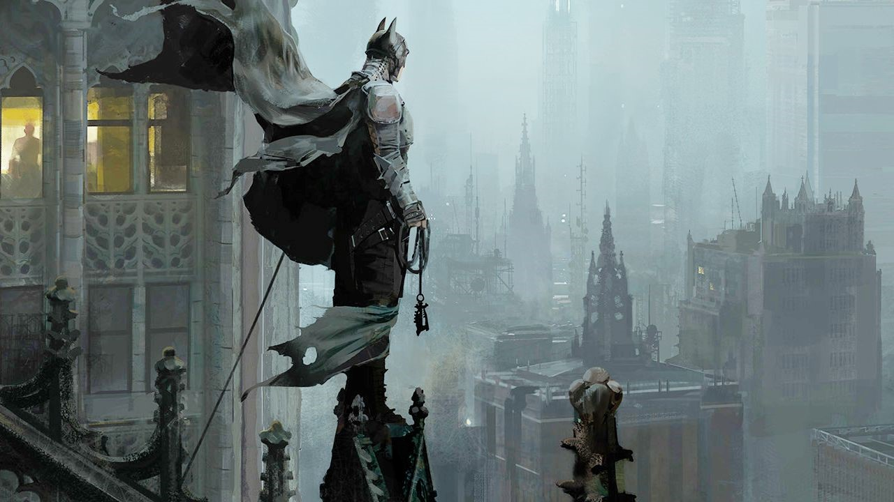
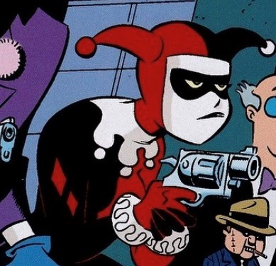
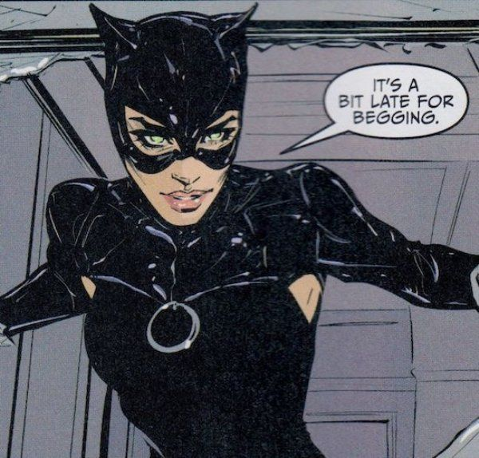
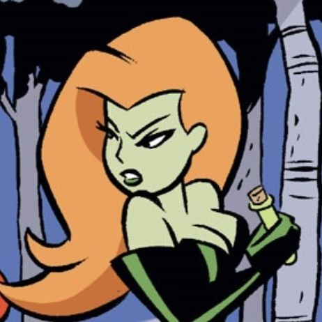

was a psychiatric intern at Arkham Asylum. A model student, in addition to receiving high grades in college, she was also a dedicated gymnast, winning a scholarship to Gotham City University. While researching the lunatics at Arkham, she became fascinated with one particular inmate. Ambitiously volunteering to analyze him, she pleaded with the doctors at Arkham for three months before she could treat him. After he gained her sympathy during their sessions, he seduced her, causing her to fall madly in love with him. During an earthquake in Gotham City, she fled and became Harley Quinn, the sidekick of the Clown Prince of Crime himself.
also known as Catwoman, is a jewel thief from Gotham City and one of Batman's most-well known enemies. Currently portrayed as an orphan who learned to survive on Gotham's streets, Selina took to thievery to survive... but determined to do it in style, she learned martial arts and trained extensively to perfect her skills in cat burglary. Her criminal activities are often tempered by a reluctant altruism, making her an inconstant villain and occasional ally to Batman. She regularly eludes capture by the Dark Knight and maintains a complicated relationship which frequently fluctuates between flirtatious to romantic.
is the alter ego taken by Dr. Pamela Lillian Isley, an eco-terrorist and prominent enemy of Batman. she is depicted as one of the world's most prominent eco-terrorists, motivated by an obsession with plants, misandry, botany, and extremist environmentalism with a desire to save the world from the evils of man through any means necessary. A genius scientist and meta-human with hybridized plant DNA, Poison Ivy uses mutant plants, will-bending pheromones and toxins from plants and her own bloodstream for her criminal activities. Ivy has also developed a special relationship with fellow villain Harley Quinn.
ყველა უფლება დაცულია